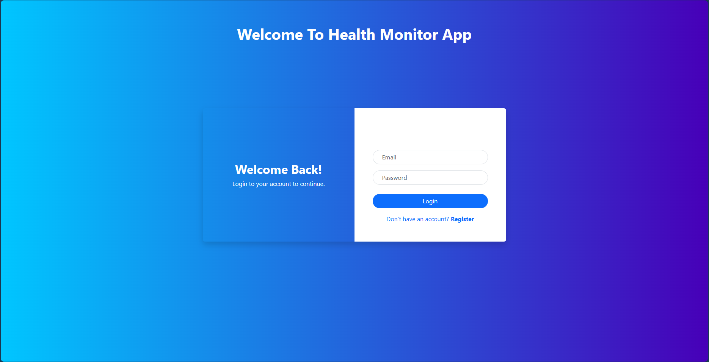
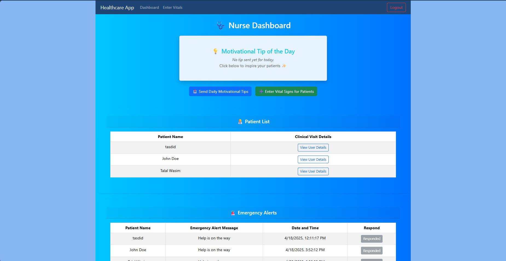
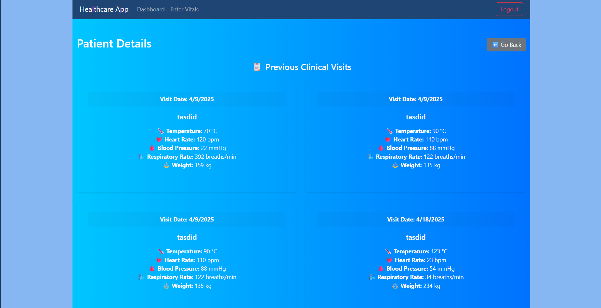
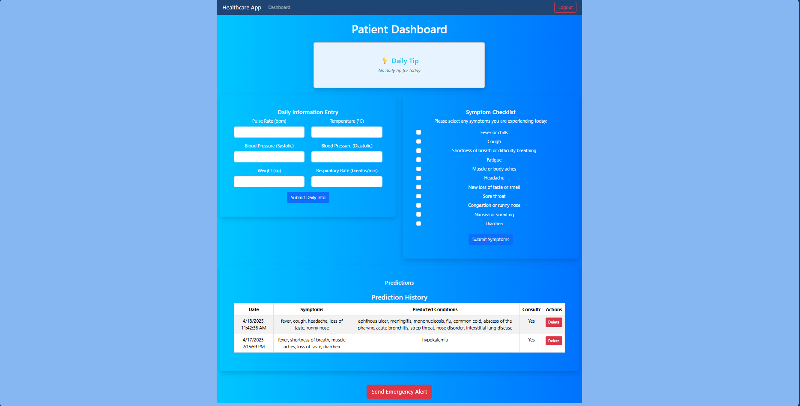

Health Monitor App
Overview
Health Monitor is a modern full-stack web application designed to support patients and nurse practitioners during the critical post-hospital recovery phase. Built using a microfrontend architecture and GraphQL APIs, it enables real-time vital tracking, emergency alerts, and symptom reporting. Patients can log daily health data and receive motivational tips, while nurses can manage clinical records and send guidance. A custom-trained deep learning model also predicts possible diseases based on symptom inputs. The project was developed collaboratively by a team of 4–5 students for COMP308, applying modular architecture, responsive design, and intelligent automation using TensorFlow. It showcases emerging tech like React 18.2+, Apollo Server, and Flask microservices.
Key Features
Nurse Features
Nurses can securely register and log in to the system, enter vital signs for patients—including temperature, heart rate, blood pressure, respiratory rate, and weight—and view a full history of clinical visits. They can also send daily motivational tips to their assigned patients, offering encouragement and improving post-hospital care.
Patient Features
Patients are able to log in to their personal dashboard, enter daily vital signs, and submit emergency alerts to healthcare providers. They can also complete symptom checklists for illnesses such as COVID-19 and RSV, and view motivational messages sent by their nurses to stay engaged in their recovery.
AI Features
The app includes a deep learning model that predicts possible diseases based on user-reported symptoms. It uses a multi-layer perceptron trained on a curated dataset of over 400 symptom indicators. The model outputs a ranked list of likely conditions and is served via a Flask microservice, integrated directly into the patient interface to support faster clinical decision-making.
Gallery




Tech Stack
| Layer | Stack |
|---|---|
| Frontend | React 18.2+, React Bootstrap, Vite |
| Backend | Express.js, Apollo Server, GraphQL |
| Microservices | Node.js, Flask (optional for AI) |
| Database | MongoDB (Mongoose ODM) |
| Architecture | Micro Frontends + Microservices |
| Styling | React Bootstrap, Responsive Web Design |
Collaborators
Ignacio
Kunai
Sebastian